この動画で伝える一文
「誰でもできる」を前提なしの万能だと捉えている人に、その仕事に必要な基礎を言葉にしてそろえる前提とセットで作ることを伝え、属人化をなくすことと、積み重ねた努力を軽く扱わないことは両立するという手応えを残す。
01の「基礎がある人は、誰でもできる。」と、09の「基礎がある人なら、誰でもできる。」「機会を、用意する。」だけで、同じ主張が通るようにします。切り口「『誰でも』に足りない、たった7文字」は、01の画面で使います。動画の題は記事の題のままです。「基礎がある人は」は7文字で、原稿が目指す言い方そのものです。原稿は「7文字」とは書いていません。
留保は03と05に置きます。手順を整理し、簡単にするのはよいこと。前提を決める。簡単に解ける方法がまだない問題もある。やり方は隠さない。育てる責務は引き受ける。届く時間は人によって違い、積み重ねた努力は安く扱わない。最後は本人の結論で閉じ、視聴者への問いかけや、両論を同じ比重にしたまとめにはしません。
視聴者
手順書や引き継ぎで「誰がやってもできるようにしてほしい」と言う人、属人化を減らしたい人。見終わったあと、その仕事に必要な基礎を言葉にし、基準を満たした人へ渡すことと、その基礎を身につける機会を用意することを、セットで考えられるようにします。
構成と尺
声は理由・留保・本人の経験の範囲を、文字は主張と決め語を、図形は範囲・基準・時間の厚みを受け持ちます。全文字幕は足しません。
本編130秒、全体135.5秒です。声は675字。5.6字/秒を仮の読み速度とすると約120.5秒です。残りの約10秒は、01で7文字がはまる間、02で円が止まる間、09で結論を受け取る間に寄せます。5.6字/秒は、過去の日本語ナレーションの実測（約5.5〜5.7字/秒）に合わせた目安で、語の読みと間で実測は変わります。制作側が声と画を合わせて調整します。3分には伸ばしません。尺が足りなければ、02の例示と08の分野の説明から詰め、01の主張、03と05の留保、09の結論は残します。
| カット | 区間 | この区間で分かってほしいこと | 声／画面 |
|---|---|---|---|
| 01 たった7文字。 | 0:00–0:13（13秒） | 誰でもできる方向には賛成。足りない条件がはまる | 61字／33字 |
| 02 基礎は、要る。 | 0:13–0:28（15秒） | 誰でもの範囲は、基礎を言葉にしたところで区切る | 71字／10字 |
| 03 前提を、決める。 | 0:28–0:41（13秒） | 簡単にするのはよい。前提の前に細かくしない | 72字／15字 |
| 04 同じ力は、すぐ渡らない。 | 0:41–0:53（12秒） | 人のコピーを頼まれても、同じ力はすぐ渡らない | 63字／25字 |
| 05 時間を、含めて。 | 0:53–1:08（15秒） | 隠さない。責務は引き受ける。時間と努力は残す | 79字／20字 |
| 06 この領域なら。 | 1:08–1:22（14秒） | 人の全体か、仕事の一部かを決める | 73字／21字 |
| 07 採用する。育てる。 | 1:22–1:37（15秒） | 同じ基準の上で採用し、育てる。力は課題で変わる | 82字／26字 |
| 08 基礎の共有も、属人化をなくす。 | 1:37–1:53（16秒） | 業務の知識も含めて基礎を共有する | 90字／28字 |
| 09 機会を、用意する。 | 1:53–2:10（17秒） | 努力の尊重と引き継ぎは両立する | 84字／39字 |
| 10 エンドロゴ | 2:10–2:15.5（5.5秒） | 制作表示 | 0字／0字 |
字数は空白・改行を除き、句読点を含みます。画面は各カットの「画面の文字」に掲げた文言の合計です。同一文言の再登場はカットごとに数えます。
カット表・絵コンテ
各カットの開始と終了を画像で示します。コマ画は構図の設計資料です。番号、はじめ、おわりは画像の外だけに書きます。章表示、テロップ帯、エンドクレジットは入れません。秒数・位置・角度は参考値です。制作側は動きの狙いと可読性を満たす方法を選べます。大きな画面運動を、入口と出口だけに限定しません。
たった7文字。
0:00–0:13 / 13秒 ・ 主張 ・ 声61字／画面33字

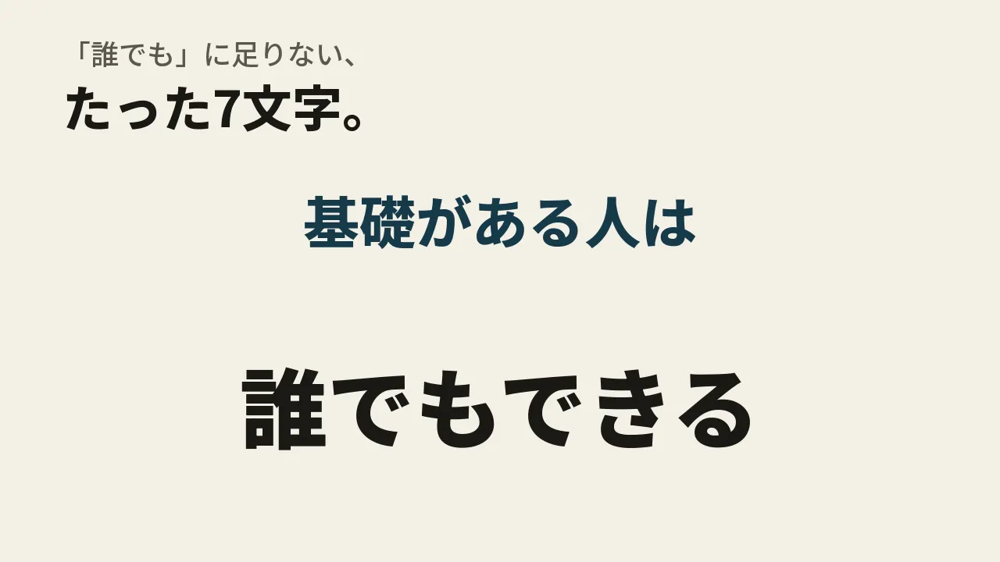

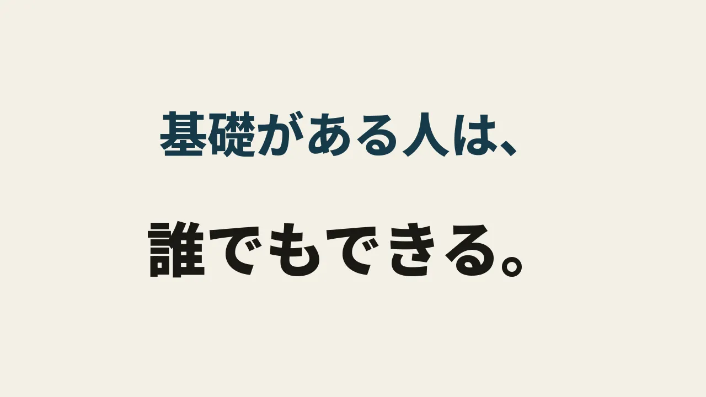
「誰でも」に足りない、
たった7文字。
基礎がある人は、
誰でもできる。
「誰がやってもできるようにしてほしい」。その方向には、賛成です。足りないのは、たった7文字。基礎がある人は、誰でもできる。
はじめは左上の切り口と、中央で分かれた二段。おわりは切り口が退き、藍の条件と墨の結論が画面の中央を二段で占める。7文字は一つの塊で、1字には分けません。
- 「誰でもできる」が行のマスクから大きく入る。その上で「たった7文字。」が着地し、声の「たった7文字」に合う。
- 「基礎がある人は」が塊のまま上から落ち、行が右へ開いた隙間にはまる。着地は声の「基礎がある人は」。字形は崩さない。
- 読む間も二段を一つの塊として、わずかに寄せて拡大する。1字ずつの揺れはしない。
- はまってできた二段を、02の円の中心へ押し出す。
図はまだ置かない。文字の塊の落下と押し出しが画面全体の運動です。寄りのカメラは02の輪から掛けます。
文字だけ。引用符の中の依頼は、原稿の「誰がやってもできるようにしてほしい」です。
基礎は、要る。
0:13–0:28 / 15秒 ・ 範囲 ・ 声71字／画面10字

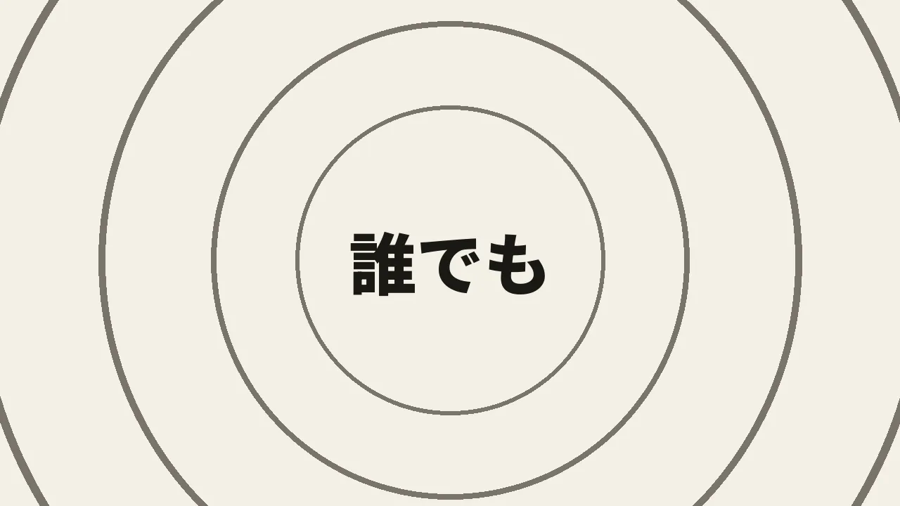

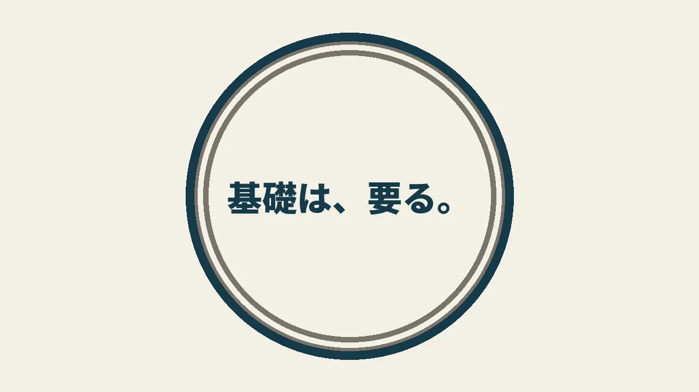
誰でも
基礎は、要る。
経験者なのか、来たばかりの人なのか。極端に言えば、中学生まで含むのか。前提が変われば、説明も変わります。基礎まで不要にすることとは、分けます。
01の横二段から、円の中心の一語へ。おわりは円が画面の中に収まり、語は輪の内側だけに置きます。円は「誰でも」の範囲で、人の姿ではありません。
- 灰の輪が手前へ広がり続ける。近い輪ほど大きく動く。いちばん外の輪は画面の外へ出たまま止まらない。
- 声の「中学生まで」で範囲の広がりを見せ、声の「分けます」で藍の輪が描き終わって止まる。「基礎は、要る。」がその内側に着地する。
- 止まったあとも、輪と語の塊を一緒にゆっくり寄せ、静止画の切り替えにしない。
- 止まった輪の縁が、03の基準線の垂直へ折れ曲がる。
輪の層だけを、広がりの方向へ進めて、当たった位置で止める。文字は正面の層のまま、輪に切れない。
図形と文字。原稿に円という語はない。範囲が基礎で区切られることの絵です。対応は references.md。
前提を、決める。
0:28–0:41 / 13秒 ・ 留保 ・ 声72字／画面15字

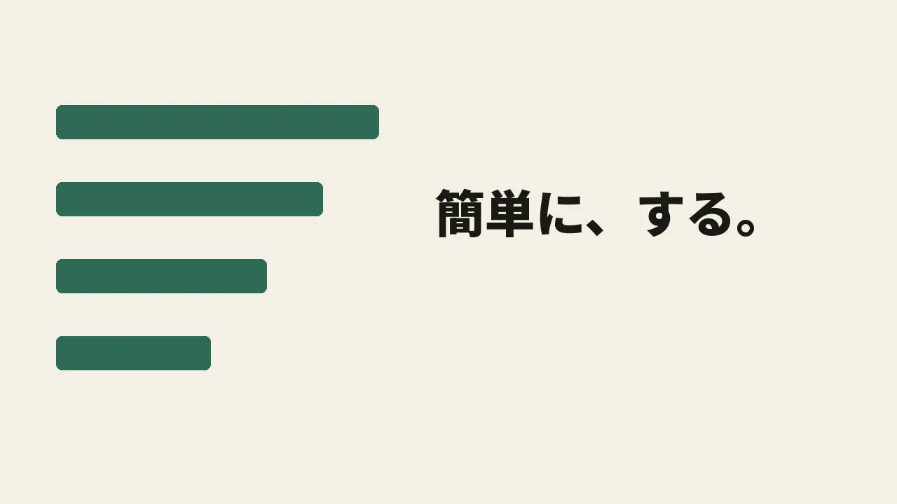

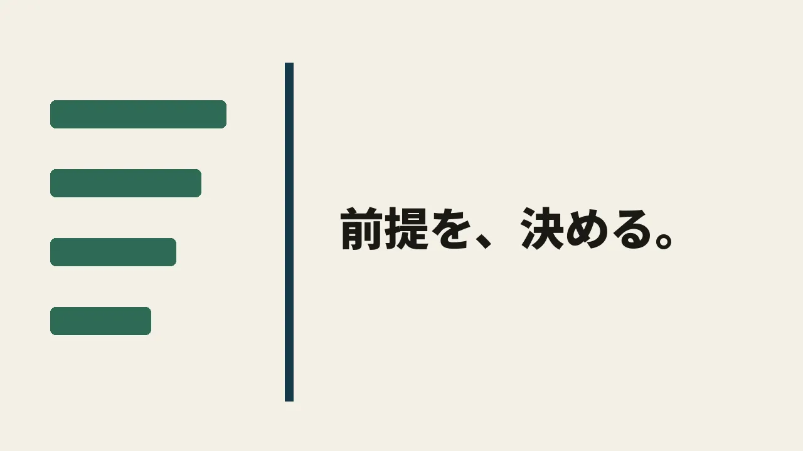
簡単に、する。
前提を、決める。
手順を整理し、簡単にするのはよいことです。前提を決めないまま細かくすると、説明に終わりが見えません。簡単に解ける方法が、まだない問題もあります。
左の手順、右の語。おわりは左に止まった手順、中央に縦の基準、右に決め語。円はここには出しません。簡単にすることを、否定の色にはしません。
- 緑灰の線が左から段になって短くなる。「簡単に、する。」は声の「よいことです」に合わせて入る。
- 線が増え続けるのを、縦の藍の線が横切って止める。「前提を、決める。」は声の「前提を決めないまま」の着地に合わせる。
- 読む間、止まった線の列と基準線を逆方向へゆっくり流す。
- 縦の基準線が横へ倒れて、07で同じ線として戻る予告を残し、04の余白へ抜ける。
増える線を横へ追い、基準線が入ったところで線の切れ目へ寄る。
図形と文字。留保は、簡単にすること自体を悪にしないことと、まだ簡単に解けない問題があることです。
同じ力は、すぐ渡らない。
0:41–0:53 / 12秒 ・ 言葉だけの依頼 ・ 声63字／画面25字

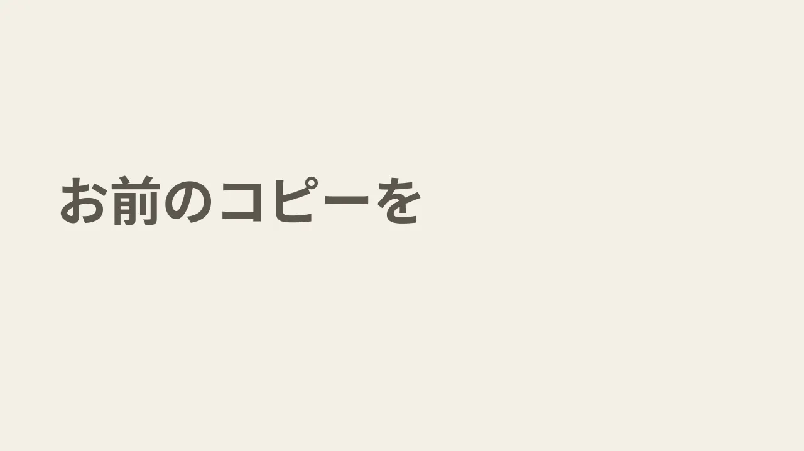

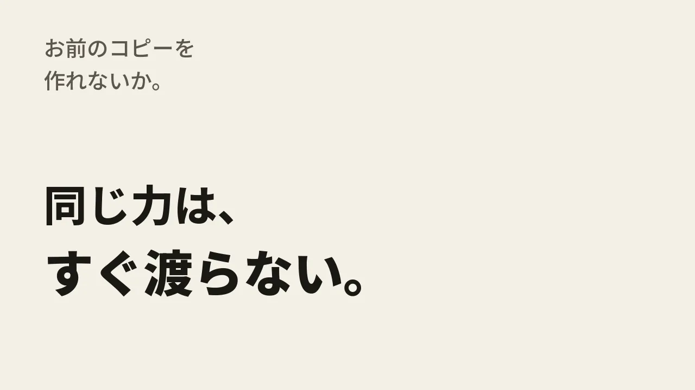
お前のコピーを
作れないか。
同じ力は、
すぐ渡らない。
上司から、「お前のコピーを作れないか」と頼まれました。評価はありがたかった。教えるだけで、同じ力がすぐ渡る注文ではありません。
はじめは左の一句と、右の大きな余白。余白は、人を描かないための空きです。おわりは上に灰の引用、下に墨の答え。吹き出しの尾は付けません。
- 引用の一行が左から入り、声の「お前のコピーを作れないか」と一緒に「作れないか。」が下へ続く。
- 答えの二行が右から大きく入り、声の「同じ力がすぐ渡る」に着地する。引用は小さく上へ退く。
- 読む間、答えの塊を左へ、引用を逆へ流し、余白が閉じないようにする。
- 答えの塊が右へ押し出され、05の縦の「時間」になる。
引用の行を横に追い、答えが入るとき画面の重心を下へ移す。人物のいない余白を、人の立ち位置として使わない。
文字だけ。会社名は出さない。「同じ力は、すぐ渡らない。」は引用ではなく、原稿の要約です。
時間を、含めて。
0:53–1:08 / 15秒 ・ 留保 ・ 声79字／画面20字

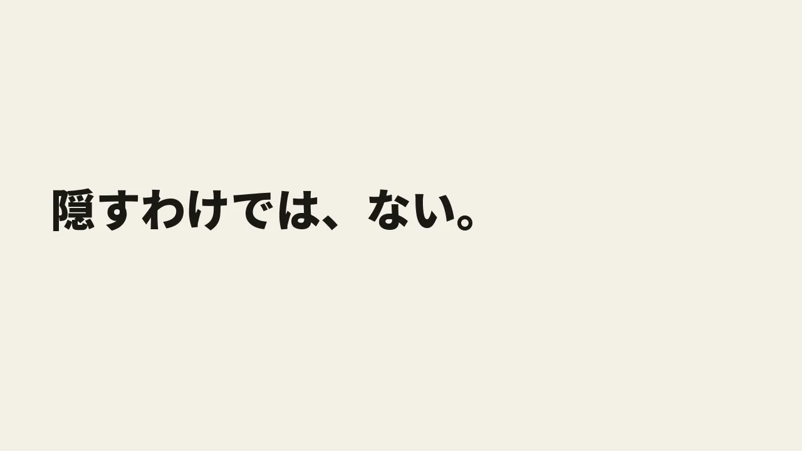

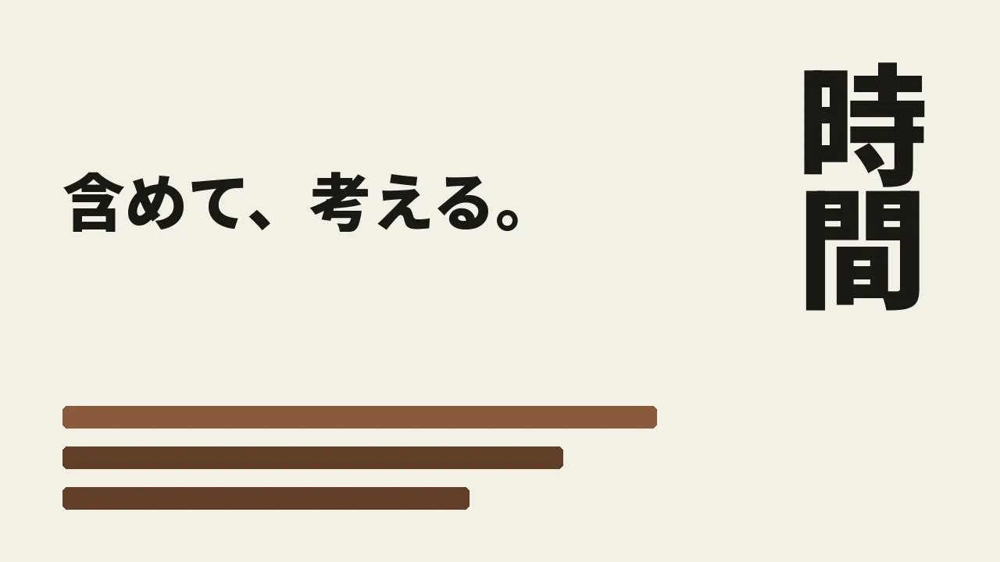
隠すわけでは、ない。
時間
含めて、考える。
やり方を隠したいわけではありません。伝えられることは、伝えていきます。育てる責務は、引き受けます。届く時間は人によって違い、積み重ねた努力を安くは扱いません。
はじめは横の一文。おわりは右の縦二文字が主役で、左に横の続き、下に層。縦は右から読むので、「時間を含めて、考える。」になります。層は円でも、基準線でもありません。
- 「隠すわけでは、ない。」が行のマスクで入り、声の「隠したいわけではありません」に合う。
- その行が左へ退き、縦の「時間」が右から立つ。着地は声の「届く時間」。下の層が一段ずつ厚くなる。
- 「含めて、考える。」が左から入る。読む間、層は厚みを増し続け、文字は正面のまま。
- 層の端が、06の広い範囲の線へ伸びる。
層の厚みが見えるよう、図の層だけを少し回り込む。読ませる語は床に寝かせない。
図形と文字。学歴の話は出しません。層は経験の時間で、積み木の映像ではありません。
この領域なら。
1:08–1:22 / 14秒 ・ 範囲を決める ・ 声73字／画面21字

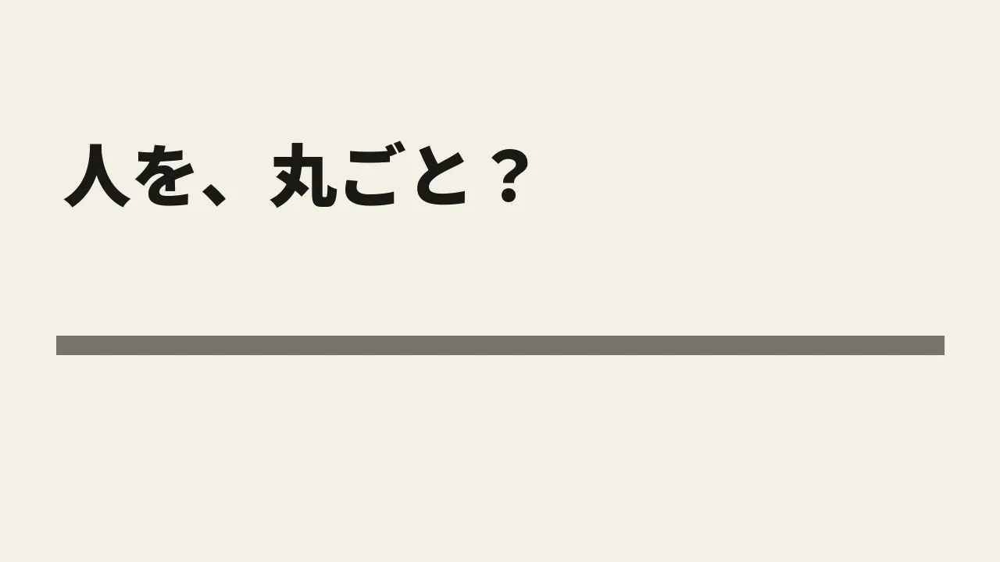

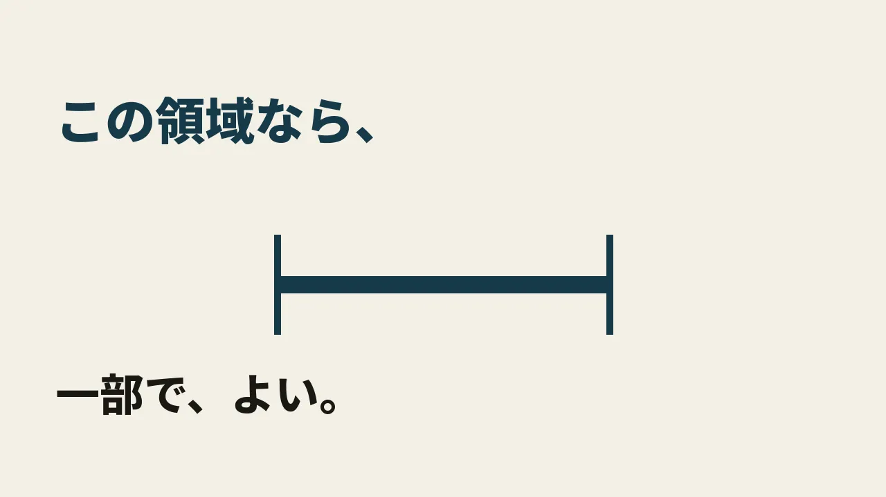
人を、丸ごと？
この領域なら、
一部で、よい。
育てるなら、どの領域で何ができるようになるかを決めます。人を丸ごと再現するのか、一部を引き継ぐのか。範囲が決まれば、中身も時間も具体的になります。
上の問いと、下の端まで続く線。おわりは問いが退き、線は中央の一区間だけになる。上に藍の「この領域なら、」、下に「一部で、よい。」。05の層とは別の形です。
- 「人を、丸ごと？」と長い線が入り、声の「人を丸ごと再現するのか」に合う。
- 線の両端が中央へ縮み、括りの縦線が描かれて止まる。止まりは声の「範囲が決まれば」。
- 読む間、括られた区間の中を視線が横へ移動し、区間の外は空いたまま。
- 括りの横線が水平のまま07の基準線へ渡る。
長い線の上を横へ進み、括りができた位置で止まる。
図形と文字。一部を引き継げば常に足りる、という結論にはしません。
採用する。育てる。
1:22–1:37 / 15秒 ・ 基準 ・ 声82字／画面26字

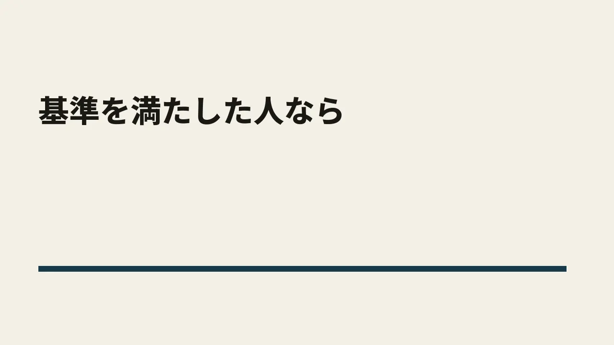

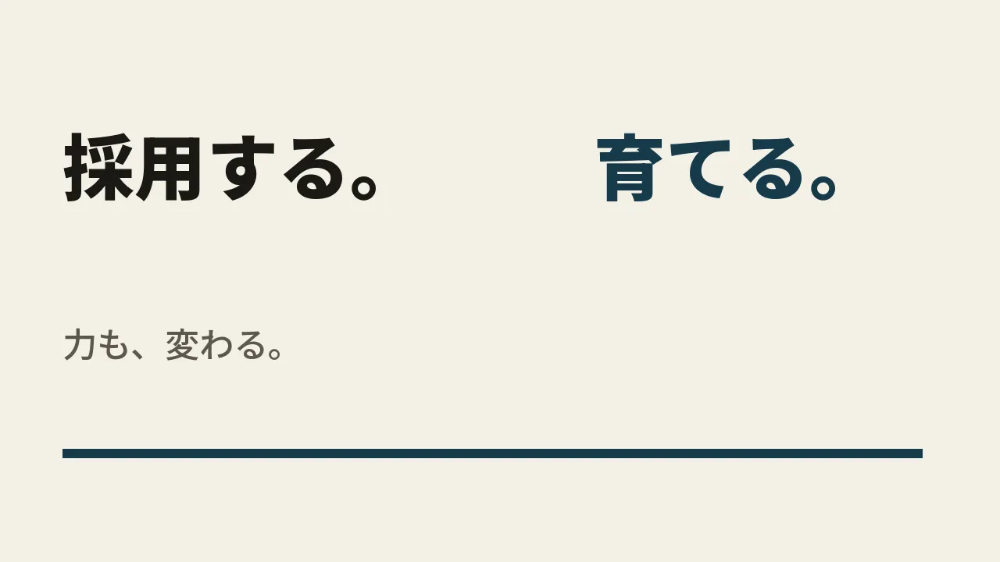
基準を満たした人なら
採用する。
育てる。
力も、変わる。
基準を満たした人なら誰でもできる、を目指していました。採用も、最低限の知識や技能が基準です。難しい課題では、必要な力も変わります。手順だけでなく、採用し、育てます。
はじめは上の一文と、下の一本線。おわりは左の墨「採用する。」と右の藍「育てる。」が同じ高さで並び、その下に灰の留保。人の点や顔は置きません。
- 「基準を満たした人なら」が線の上に入る。線は03で倒した基準線の続きです。
- 一文が左右へ分かれ、「採用する。」と「育てる。」になる。着地は声の「採用し、育てます」。
- 「力も、変わる。」は声の「必要な力も変わります」に合わせ、決め語より小さく残す。基準が一つに固定された絵で終わらせない。
- 線が08の面の下辺へ太くなる。
線に沿って引き、二つの語が同じ線の上に並ぶところまで見せる。
図形と文字。基準の中身を、この動画で新しい数値や資格として定めません。
基礎の共有も、属人化をなくす。
1:37–1:53 / 16秒 ・ 基礎の共有 ・ 声90字／画面28字

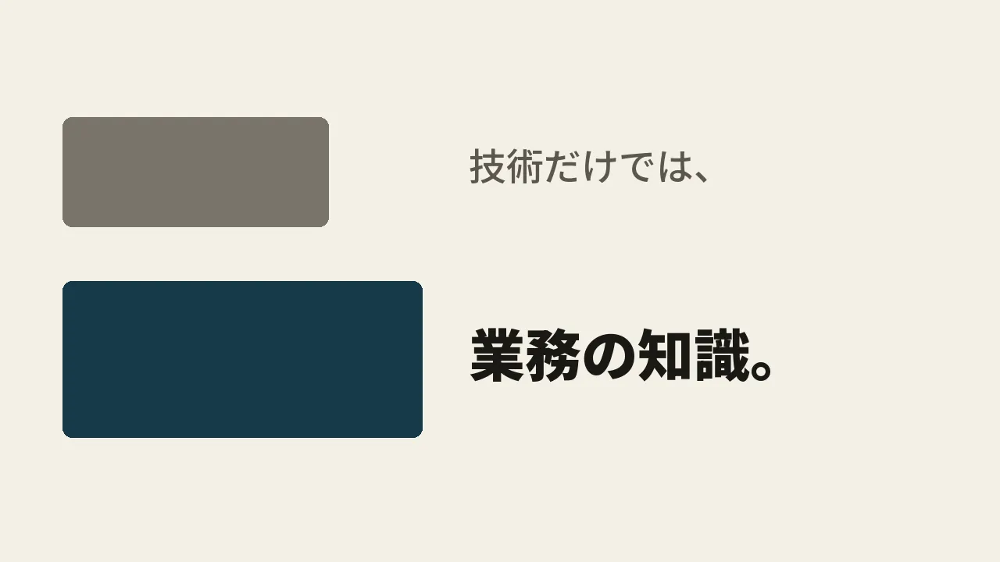

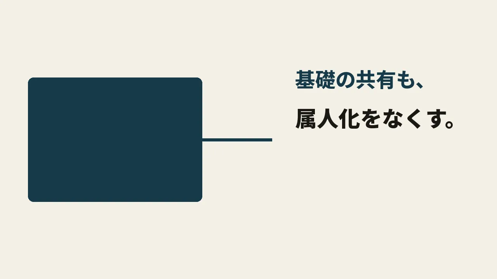
技術だけでは、
業務の知識。
基礎の共有も、
属人化をなくす。
私の関わった金融や行政では、業務の知識も要りました。なければ、学んでもらう。すぐできるようにするだけが、方法ではありません。基礎を共有して引き継ぐ。それも、属人化をなくす仕事です。
はじめは左の二面と、右の二段。面の中に字は入れません。おわりは左の一つの藍の面から短い線が右へ伸び、その先に二段の結論。線は字の手前で止まります。
- 灰の面と「技術だけでは、」が先に入る。藍の面と「業務の知識。」が下から迫り、声の「業務の知識」に合う。
- 二面が一つの面に重なり、線が右へ描かれる。「属人化をなくす。」は声の「属人化をなくす仕事」に着地する。
- 読む間、面は左へ、文字の塊は逆へ流れ、線が字に届かない間隔を保つ。
- 面が左右に割れ、09の「努力」と「引き継ぐ」になる。
業務の面へ寄り、線が伸びる方向へ進む。文字の層は面のカメラに乗せない。
図形と文字。金融と行政は、声で「私の関わった」範囲に限る。組織名とロゴは出さない。
機会を、用意する。
1:53–2:10 / 17秒 ・ 本人の結論 ・ 声84字／画面39字

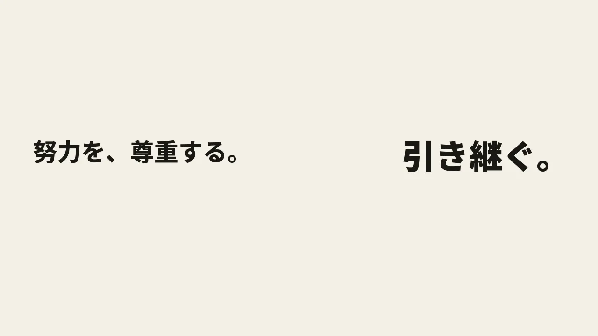

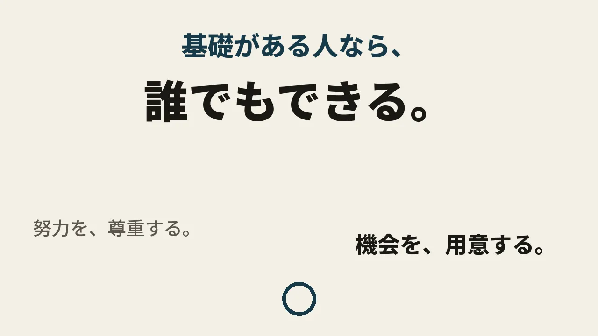
努力を、尊重する。
引き継ぐ。
基礎がある人なら、
誰でもできる。
機会を、用意する。
道を開いた人の努力を尊重することと、仕事を引き継ぐことは、両立します。目指すのは、基礎がある人なら誰でもできる状態。その基礎を身につける機会を、組織が用意することです。
はじめは左右に離れた二つの語。おわりは上の二段が主役で、下に灰の「努力を、尊重する。」と墨の「機会を、用意する。」。下中央の小さな輪は、02の止まった範囲の再登場です。新しい意味は持たせません。
- 左右の語が異なる深さから中央の方向へ進む。ぶつかって消えるのではなく、上の行の下に残る。
- 「基礎がある人なら、」が上から落ち、「誰でもできる。」にはまる。01と同じ割り込みで、声の「誰でもできる状態」に着地する。
- 「機会を、用意する。」は声の「用意すること」に合わせ、右下に残す。読む間、上の二段と下の二つの語を逆方向へ流す。
- 声の結びを受け取る間のあと、画面全体を横へ振ってライムの全面へ渡す。白フラッシュは使わない。
左右の語へ寄ってから引き、上の結論が画面幅を使うところまで戻す。最後の振りはロゴの動きの前に終える。
図形と文字。01の結論を、本人の「機会を用意する」まで含めて閉じます。
エンドロゴ
2:10–2:15.5 / 5.5秒 ・ 制作表示 ・ 声0字／画面0字

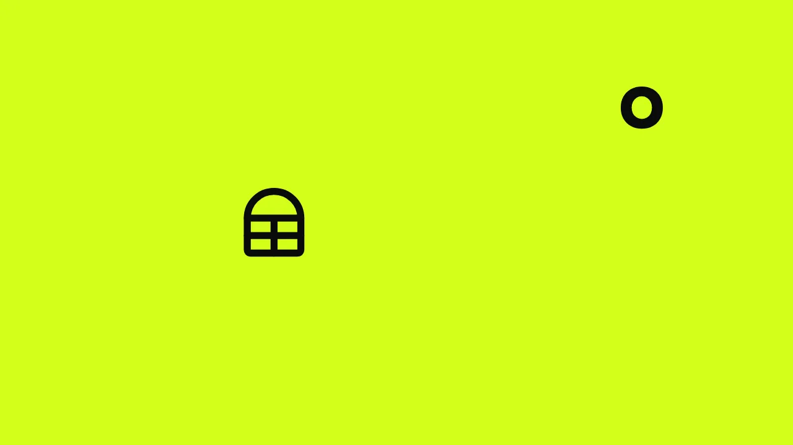

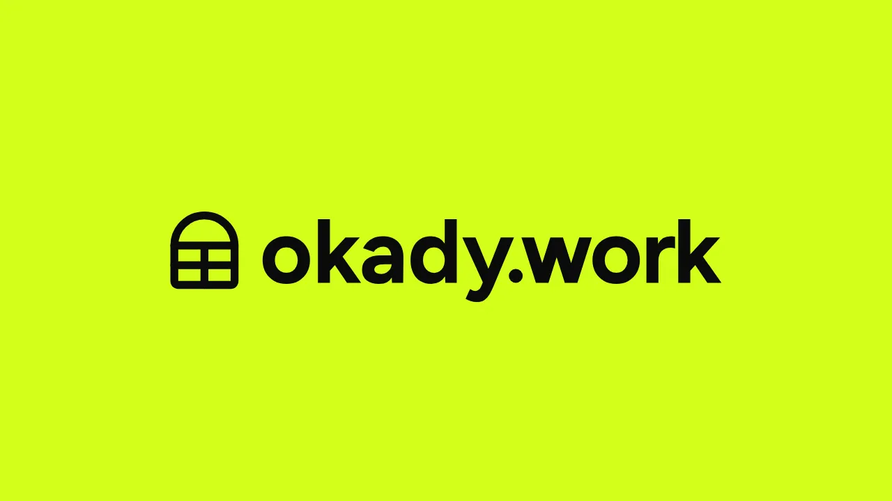
なし（ロゴのみ）
なし
背景は #d2ff1a。ロゴは中央。形、書体、色、比率は変えない。本編の要素は重ねません。
- 0–2.6秒：原本 SVG の o の落下、バウンド、定位置への移動。
- 2.6–3.2秒：全体が左へスライド。3.0–4.0秒：「.work」が一文字ずつ出現。
- 4.0–5.5秒：完成状態を1.5秒保持する。BGMもここで収める。
ロゴの区間は固定。本編からの振りは、この動きが始まる前に終えます。
リポジトリ直下の okady-work-logo.svg。フレーム時刻から再現します。

詳細（ここから下は補足）
声・文字・素材の分担
| 担当 | 受け持つこと | 扱い |
|---|---|---|
| 声 | 賛成であること、範囲の具体、留保、引用、本人の経験の範囲、結論 | 画面の短い語と意味を合わせる。画面の全文の朗読にはしない。カット単位のまとまった文で渡す。 |
| 文字 | 7文字の条件、基礎は要ること、前提、コピーへの答え、時間、範囲、採用と育成、結論 | 説明の全文は載せない。主語が要る場面は二段まで使う。 |
| 図形 | 広がって止まる範囲、手順、基準線、経験の厚み、育てる範囲、技術と業務 | 一つの形に複数の意味を持たせない。対応は記号と色。 |
ナレーションありの構成です。音声の制作は制作側の担当で、音源がまだ無いことは引き渡しを止める理由にしません。
主張・根拠・留保の対応
| 役割 | 内容 | カット |
|---|---|---|
| 主張 | 誰でもできる状態は、必要な基礎を言葉にしてそろえることとセットで作る。 | 01・02・09 |
| 留保 | 簡単にする工夫と手順の整理はよい。前提を決める。まだ簡単に解けない問題もある。 | 03 |
| 留保 | やり方は隠さない。育てる責務は引き受ける。届く時間は人による。努力を安く扱わない。 | 05 |
| 根拠 | 人のコピーを頼まれても、同じ力は教えるだけではすぐ渡らない。範囲を決め、基準の上で採用し育てる。 | 04・06・07 |
| 根拠 | 業務の知識も含めて基礎を共有することが、属人化をなくすことでもある。 | 08 |
| 結論 | 努力の尊重と引き継ぎは両立する。基礎がある人なら誰でもできる状態と、その機会を組織が用意する。 | 09 |
原稿の文との対応、引用と要約の区別は references.md。
企画側／制作側
| 企画側で用意するもの | 制作側で仕上げるもの |
|---|---|
| 現行の文言、声の原稿、配分、絵コンテ20枚、原稿との対応、演出の採否 | three.js と文字層の実装、細かな動きと同期、声、BGM、効果音、代表区間の試作と全編の書き出し |
| 静止コマの文字配置の点検 | 動いている全カットの安全域と重なりの検査、実速再生、音の終わり方の確認 |
企画と絵コンテはこの一式です。音声と本編は制作側が担当します。画像や動画が追加で必要になったら、必要な内容を企画側へ返します。制作側は動画AIで新規の素材を作りません。
requestAnimationFrame のループを本編の動きにしません。デザインシステム（動画本編）
紙色 #F4F0E6、墨 #1A1814、灰 #5C574E、まだ決まっていない範囲の灰 #7A7468、基礎と基準の藍 #163A4A、手順の緑灰 #2E6B4E、経験の時間の粘土色 #8A5A3C。ライム #d2ff1a はロゴだけに使います。文字は Noto Sans JP、見出し700–900、補足400–500。制作側が OFL に沿って用意します。このフォルダには同梱しません。企画書の配色とは別です。
| 段 | 1920×1080の参考値 | 用途 |
|---|---|---|
| 大きな語 | 160–220px | 01の「誰でもできる。」、05の縦の「時間」、09の「誰でもできる。」 |
| 主文 | 90–140px | 02の「基礎は、要る。」、03の留保、04の答え、07の二つの動詞 |
| 短い語 | 48–72px | 04の引用、07の「力も、変わる。」、09の下段 |
外側余白は96pxを目安にします。文字の安全域は左右64px、上下48px。1280×720の絵コンテでは左右48px、上下36pxです。01は二段の割り込み、02は円の中心、03は左の手順と右の語、04は余白の大きい引用、05だけ縦書き、06は線の長さの変化、07は同じ高さの二つの動詞、08は面と右の二段、09は上の結論と下の二つの語です。
動きの言語
| 動作 | 意味と使う場所 | 読む間・次へのつながり |
|---|---|---|
| 落ちてはまる | 01と09。「基礎がある人は」が、「誰でもできる」の上からはまって条件になる。 | 塊のまま落とす。着地のあと二段を寄せ続け、次の円か横の振りへ渡す。 |
| 広がって止まる | 02。「誰でも」の範囲が、言葉にした基礎の輪で止まる。 | 止まったあとも輪と語を動かし、輪の縁を03の基準線へ渡す。 |
| 線で止める・括る | 03で手順を基準が止める。06で人の全体を、領域の区間へ括る。07で同じ線の上に採用と育成を置く。 | 線は描き終わって止まる。読む間は線と語を逆方向へ流す。 |
| 厚み | 05。経験を重ねる時間が、層として厚くなる。 | 層は図の層で回り、読ませる語は正面に残す。層の端を06の線へ渡す。 |
拍の目安は108–116 BPM。01の着地、02の停止、06の括り、09の再着地をアクセントに合わせます。比較や留保の区間にも流れを残します。1字ずつの常時の揺れ、拍ごとの脈動、文字の崩壊は使いません。文字を読ませるために画面全体を静止させず、文量、動かす層、構図で調整します。イージングの値と秒の同期は制作側の裁量です。決め語を声のどの語に合わせるかは、各カットに書いてあります。
記号と色
| 記号 | 意味 |
|---|---|
| 墨の大きな語 | 本人の決め語。01と09の「誰でもできる。」、04の答え、07の「採用する。」 |
| 藍の語・藍の輪・藍の線 | 言葉にして決めた基礎と基準。範囲を止める場所であり、前提の線であり、採用と育成が共有する線。人の数ではない |
| 灰の輪 | まだ言葉になっていない「誰でも」の広がり。02で広がり、藍の輪で止まる |
| 緑灰の短い線 | 手順を整理し、簡単にすること。よいこととして置き、03の基準線で増殖を止める |
| 粘土色の層 | 本人が経験を重ねる時間の厚み。05だけ。基礎の円や積み木ではない |
| 括られた区間 | 育てる範囲を領域で決めたこと。06だけ |
| 灰の面と藍の面 | 技術と、業務の知識。08だけ。面の中に字は入れない |
| 灰の小さな引用 | 04の「お前のコピーを作れないか」。本人の結論ではない |
キャラ設定
人物、顔、手、吹き出しの尾は描きません。04の依頼は言葉だけです。02の声にある「中学生まで」は、原稿の「極端に言えば」の範囲を言うだけで、その姿は描きません。上司も、採用する人も、育てる人も、点や人型にしません。
素材の方針
画像も動画も使いません。範囲が止まること、経験の時間が厚くなること、基準の線は、制作側の図形で描きます。
積み木の5秒（土台に次の段が載る）は、基礎の上に次が載る役割として検討し、使いません。撮影は手元が入りやすく、円と線が続く作品の一部だけ質感が変わります。素材サイトの映像は利用条件が未確認で、同じ分かれ方が起きます。作画の図形で、02の止まる円と05の層がその役割を受け持ちます。AI生成の映像と画像は未承認で、この企画では生成しません。円の広がりと文字の落下はモーショングラフィックスで表現できるため、動画AIの対象にしません。
採用素材と使う区間
| ファイル | 役割 | 使用区間 |
|---|---|---|
assets/storyboard/cut-XX-start.webp と cut-XX-end.webp | 絵コンテ20枚。1280×720、明るい紙色 | 本編に貼る完成素材ではない |
| okady-work-logo.svg | エンドロゴ | 10の全区間。リポジトリ直下の原本。一式を移すときもこの相対位置を保つ |
新たに取得する写真、動画、フォントファイルはありません。Noto Sans JP は制作側が用意します。
音
BGMはこの作品のために作ります。乾いた木、短い撥弦、輪郭のあるプラック。108–116 BPMを目安に、01の着地、02の停止、06の括り、09の結びを支えるアクセントを付けます。曲を遅くして、画の動きを弱めません。過去作品の音源は使わず、特に20261007の企画で雰囲気が合わないとされた音源は使いません。
ナレーションは落ち着いた会話調で、カット単位の文として渡します。短い句へ細かく割って、抑揚を壊さないようにします。読みは「7文字＝ななもじ」「基礎＝きそ」「前提＝ぜんてい」「属人化＝ぞくじんか」「責務＝せきむ」「金融＝きんゆう」「行政＝ぎょうせい」。04の引用は、声でも画面でもその言葉のままです。
音源はロゴの終わり2:15.5まで覆い、最後の1.5秒で収めます。効果音は、7文字の着地と円が止まる瞬間に必要な分だけ付けます。冒頭、02、05、09–10で画と合わせて試し、声を隠さないことと運動感を確認します。
声、BGM、効果音のファイルは制作側が用意します。有料の音楽生成の候補は Lyria 3.5（ユーザー指定の候補名。実行時にモデルID、提供状況、料金を確認）。ローカル制作と、品質・時間・費用で比べた理由を一行残して選びます。ナレーションの候補は Gemini 3.8 Flash TTS、または Eleven v4。名称はユーザー指定の候補で、実行時に識別子を確認します。キーは環境変数から読み、値は書きません。
根拠
原稿との対応は references.md。演出候補の確認と採否は effects-direction.md。採否の履歴を、本編の作業手順には混ぜません。
完成条件・確認状態
- 01と09で「基礎がある人は、誰でもできる」が通り、09は「機会を、用意する。」まで本人の結論で閉じる。
- 03の留保は、簡単にすることをよいこととして残し、前提と、まだ簡単に解けない問題を声で残す。05は、隠さないこと、責務、時間の違い、努力を安く扱わないことを残す。
- 04は言葉だけで、人物、会社名、吹き出しの尾を出さない。学歴は画面にも声にも出さない。
- 02の円は基礎の輪で止まる。積み木の映像は使わない。一つの形に、範囲と時間と基準を兼任させない。
- 章表示、テロップ帯、エンドクレジット、白フラッシュは入れない。エンドロゴはライムの単独画面で、原本の動き、中央、1.5秒の保持、音の終了を再生して確認する。
- 絵コンテ20枚（1280×720）を、左右48px・上下36pxの安全域、文字同士、文字と図形（塗り、線、輪）の交差で検査した。はみ出し0、文字同士の重なり0、文字と図形の交差0。ロゴの字形はこの検査の対象外で、インクの外接は安全域の内側（開始は左392px・上139px、終了は左243px・上303px）。この検査は静止コマの配置で、本編の合格ではない。
- 本編は未制作。実速再生は未確認。制作側は全カットを0.25秒ごとに取り、左右64px・上下48pxの安全域、文字同士、文字と図の交差を検査する。最初の試作は01→02。そのあと05、09–10、最後に全編と音を確認する。